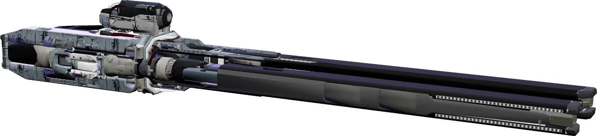
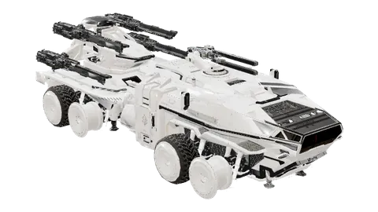
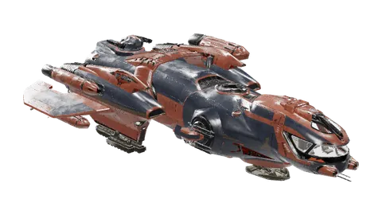

Schiffswaffe · Laser-Repetierer · Größe 3 · Hurston Dynamics
Attrition-3-Repetierer
Drei Wege führen zu dieser Waffe: kaufen, mit einem Fahrzeug ab Werk bekommen oder selbst herstellen.

Kaufen
Nach System, Preise Stand 11.10.2026
Stanton
Pyro
- Checkmate
- Dudley & Daughters
- Endgame
- Gaslight
- Megumi Refueling
- Orbituary
- Patch City
- Rat's Nest
- Rod's Fuel 'N Supplies
- Ruin Station
- Starlight Service
Nyx
Zwischen dem günstigsten und dem teuersten Ort liegen 2.729 aUEC (5 %).
Selbst herstellen
Vom Bauplan bis zur fertigen Waffe
Retrieve Additional Smuggler Intel
Investigation für InterSec Defense Solutions in Nyx, Karrierestufe Jr. bis Elite Contractor.
Die Mission wirft sicher einen Bauplan ab, aber zufällig einen von 17.
Zur Mission- Hadanite23 SCU
- Agricium1,16 SCU
- Pressurized Ice0,46 SCU
Mindestqualität jeweils 1
Fundorte in der Mining-Datenbank28 min
Die Materialqualität verschiebt Integrität (× 0,9 bis × 1,1) und Aufprallkraft (× 0,95 bis × 1,05).
Im Planer durchspielenAttrition-3-Repetierer
statt 51.851 aUEC im Laden
Ab Werk verbaut
Wer eines dieser Fahrzeuge hat, hat die Waffe schon

Centurion
Anvil Aerospace · Kampf

MISC Freelancer DUR
MISC · Erkundung
Technische Daten
Alle 15 Spielwerte
- Schaden je Schuss
- 86 Energie
- Feuerrate
- 350 /min
- DPS
- 501,67
- Bauteil-HP
- 1.024
- Projektil
- 1.480 m/s
- Flugzeit
- 1,3 s
- Reichweite
- 1.924 m
- Streuung
- 0,5
- Munition
- 75
- Regeneration
- 15 /s
- Pause vor Regeneration
- 0,73 s
- Wärme je Schuss
- 1.800
- Strombedarf
- 0,75
- EM-Signatur
- 278
- Volumen
- 0,756 SCU
- Größe · Klasse
- 3 · A